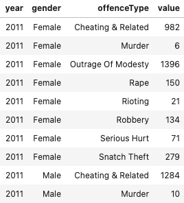
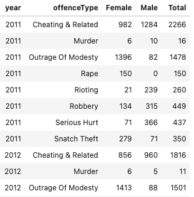

Dataset
Original Dataset

>>> I cleaned the original dataset (displayed on the left) on Python. >>>
These are the steps followed:
- I filtered the level_2 variable, which is the age group of the victims, to include the categores of only those above 21 years old and 21 years and below. The other categories contains either overlaps with the filtered categories or had many unknown age groups.
- I extracted variables on gender and offenceType from the level_1 variable, which represents the type of offence.
- After cleaning, I aggregated the dataset by year, gender and offenceType variables and summed up the value variable.
- I converted the dataset from a long to wide format, pivotted on gender and keeping the granularity at year and offenceType level for the data visualisation in the next step. The cleaned dataset is displayed on the right.
Cleaned Dataset

Female Victims
(dotted line is denoted to be total number of victims per offenceType; area under the graph is total number of FEMALE victims per offenceType)
Male Victims
(dotted line is denoted to be total number of victims per offenceType; area under the graph is total number of MALE victims per offenceType)
Explanation
- Overall, there are significantly more victims from those offences of cheating and related. They are skewed towards the male victims.
- This trend has been increasing over the years and hitting maximum numbers in 2019.
- Next, outrage of modesty contributes to a sizeable number of victims, with majority of them being females.
- The numbers have been stagnant till 2015 but has a gentle increase from 2015 to 2018 before dipping in 2019.
- Serious hurt also contributed to a number of victims. Most of them lies in the males victims.
- However, these numbers have been stagnant from 2011 to 2019.
- Other offence types such as murder, rape, rioting, robbery and snatch theft has a relatively low number of victims over the years but comparisons is seen between genders
- More female victims in offences of rape and snatch theft.
- More male victims in offences of rioting and robbery.